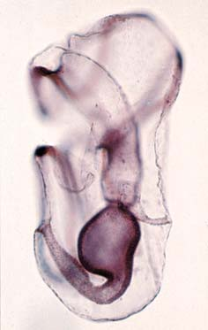
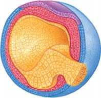

51 Desarrollo animal
1106
Embrión humano en su séptima semana de desarrollo, mide 2 cm de longitud.
© Christian Darkin/Shutterstock
E
l desarrollo incluye todos los cambios que ocurren durante la vida completa de un individuo. Sin embargo, en este capítulo el enfoque se centra principalmente en la fecundación del óvulo para formar un cigoto y el desarrollo ulterior del joven animal antes de nacer o eclosionar. Exactamente, ¿cómo un cigoto unicelular microscópico da origen a los huesos, músculos, cerebro y otras estructuras de un animal complejo? El cigoto se divide por mitosis, formando un embrión que más tarde experimenta una secuencia ordenada de divisiones celulares. En los animales, el crecimiento (es decir, el aumento de masa) ocurre primordialmente por un incremento en el número de células; pero también ocurre en esencia por un aumento en el tamaño celular, como en las células grasas. Aunque el embrión más temprano no suele crecer, las divisiones celulares posteriores suelen contribuir al crecimiento. Sin embargo, la división celular por sí misma, la cual está regida por un programa genético que interactúa con las señales del entorno (vea el capítulo 10), produciría sólo un conjunto amorfo de células semejantes. En consecuencia, este capítulo empieza con un análisis de los procesos fundamentales presentados en el capítulo 17 que contribuyen al desarrollo de la forma: la determinación y diferenciación celulares, y la formación de patrones y la morfogénesis. La fotografía muestra un embrión humano, así como parte de la placenta (la gran masa esponjosa en el ángulo inferior derecho). En este ca-
CONCEPTOS CLAVE
51.1 El desarrollo de la forma requiere no sólo la división celular sino también la determinación y la diferenciación celulares; así como la formación de patrones y la morfogénesis. 51.2 La fecundación incluye el contacto y reconocimiento entre el óvulo y el espermatozoide, la regulación de la entrada de éste, la activación del óvulo fertilizado y la unión de los pronúcleos del óvulo y el espermatozoide. 51.3 La segmentación, una serie de rápidas divisiones celulares sin crecimiento, provee los bloques de construcción celulares para el desarrollo. 51.4 La gastrulación establece ectodermo, mesodermo y endodermo; cada uno da origen a tipos de tejido específi cos. 51.5 Uno de los primeros eventos en la organogénesis (desarrollo de órganos) es la neurulación, el origen del sistema nervioso central. 51.6 Las membranas extraembrionarias (amnios, corión, alantoides y saco vitelino) han evolucionado en los vertebrados terrestres como adaptaciones a la reproducción en la tierra. 51.7 El desarrollo humano sigue el patrón de los mamíferos placentarios.
Desarrollo animal 1107
células madre , permanecen en un estado relativamente indiferenciado y preservan la capacidad de originar varios tipos de células. La diferenciación celular por sí misma no explica el desarrollo. Las células diferenciadas deben volverse progresivamente organizadas, dando forma al intrincado patrón de tejidos y órganos que caracterizan un animal multicelular. Este desarrollo de la forma, conocido como morfogénesis , se realiza mediante el proceso de formación de patrones. La formación de patrones es una serie de pasos que requiere señalización entre células, cambios en la forma de ciertas células, migraciones de células precisas, interacción con la matriz extracelular e incluso la apoptosis (muerte celular programada; vea el capítulo 4) de algunas células.
Repaso
■ ¿Qué suele presentarse primero, la diferenciación celular o la determinación celular?
■ ¿Cuáles son algunos tipos de eventos que contribuyen a la formación de patrones? ¿De qué manera la formación de patrones lleva a la morfogénesis?
51.2 FECUNDACIÓN
OBJETIVOS DE APRENDIZAJE
3 Describir los cuatro procesos implicados en la fecundación. 4 Describir la fecundación en equinodermos y señalar algunas formas en las que difi ere de la fecundación en mamíferos.
En el capítulo 50 se estudiaron la espermatogénesis y la oogénesis , los procesos por los cuales la meiosis conduce a la formación de células haploides, que se diferencian como espermatozoides y óvulos, respectivamente. En la fecundación , un espermatozoide usualmente fl agelado y móvil se une con un óvulo mucho más grande e inmóvil para producir un cigoto u óvulo fecundado. La fecundación tiene dos consecuencias genéticas importantes: la restauración del número de cromosomas diploides y, en los mamíferos y muchos otros animales, la determinación del sexo de la descendencia (vea el capítulo 11). La fecundación también tiene profundos efectos fi siológicos porque activa el óvulo, iniciando así reacciones que permiten el desarrollo. La fecundación implica cuatro eventos, algunos de los cuales pueden ocurrir de manera simultánea: (1) el espermatozoide entra en contacto con el óvulo y ocurre reconocimiento, (2) el espermatozoide o el núcleo espermático entra en el óvulo, (3) el óvulo se vuelve activo y empiezan ciertos cambios de desarrollo, y (4) los núcleos del espermatozoide y el óvulo se unen. Estos eventos no necesariamente siguen la misma secuencia temporal en todos los animales. A menos que se indique otra cosa, este análisis es válido para los erizos de mar y otros equinodermos como estrellas de mar, que han sido estudiadas intensamente porque producen grandes cantidades de gametos y porque la fecundación es externa.
El primer paso en la fecundación implica contacto y reconocimiento
Aunque los óvulos son inmóviles, son participantes activos en la fecundación. Un óvulo está rodeado por una membrana plasmática y una o más cubiertas externas que son importantes en la fecundación. Por ejemplo, un óvulo de mamífero está encerrado por una espesa zona pelúcida
pítulo se tiene la oportunidad de comparar y contrastar las secuencias de eventos del desarrollo en varios animales diferentes, además de en los humanos. Los investigadores han escogido estos organismos modelo porque poseen ciertas características deseables. Por ejemplo, los embriones de ciertos tipos de animales, como equinodermos y anfi bios, pueden obtenerse en grandes cantidades, lo que facilita los estudios en los cuales los cambios bioquímicos están correlacionados con hitos del desarrollo. Los embriones de equinodermos son particularmente fáciles de observar porque son transparentes. Los embriones de equinodermos, anfi bios y aves se desarrollan con facilidad en el laboratorio. A medida que lea, observe las estrechas relaciones entre los procesos de desarrollo secuenciales, así como las semejanzas fundamentales entre los primeros eventos de desarrollo en los diferentes grupos de animales destacados. Muchas décadas de esmeradas investigaciones sobre estas semejanzas se convirtieron en los fundamentos de la ciencia de la biología del desarrollo evolutivo, conocida popularmente como Evo Devo , presentada en los capítulos 17 y 30.
51.1 DESARROLLO DE LA FORMA
OBJETIVOS DE APRENDIZAJE
1 Analizar las relaciones entre la determinación y la diferenciación celulares, y entre la formación de patrones y la morfogénesis. 2 Relacionar la expresión génica diferencial con la equivalencia nuclear.
El desarrollo de la forma de un animal es una consecuencia de una combinación balanceada de varios procesos fundamentales que van más allá de la división y el crecimiento celular: la determinación y la diferenciación celulares, así como la formación de patrones y la morfogénesis. A medida que el desarrollo del embrión prosigue, la división celular origina un número creciente de células, las cuales sirven como los bloques de construcción del desarrollo. En varios momentos, ciertas células se vuelven química y estructuralmente especializadas en llevar a cabo funciones específi cas por medio de un proceso conocido como diferenciación celular . En el análisis sobre control genético del desarrollo que se llevó a cabo en el capítulo 17 aprendió que la diferenciación celular ocurre por medio de determinación celular , una serie de eventos moleculares en los que las actividades de ciertos genes son alteradas de manera que una célula se comprometa progresivamente en una vía de diferenciación celular. Este proceso se lleva a cabo aun cuando puede no haber cambios inmediatos en la morfología de la célula. También se evaluó evidencia que sustenta el principio de equivalencia nuclear , el cual establece que en la mayoría de los casos ninguna determinación o diferenciación celular implica una pérdida de información genética del núcleo de la célula. Es decir, los núcleos de virtualmente todas las células diferenciadas de un animal contienen información genética presente en el cigoto, pero cada tipo de célula expresa un subconjunto diferente de esa información. De hecho, la equivalencia nuclear es el principio que subyace en la clonación de organismos. Por tanto, la diferenciación celular es una expresión de los cambios en la actividad de genes específi cos, lo que a su vez es infl uido por una variedad de factores dentro y fuera de la célula. Esta expresión génica diferencial es responsable de variaciones en la química, el comportamiento y la estructura entre las células. A través de este proceso, un embrión puede desarrollarse en un organismo con más de 200 tipos de células, cada una especializada en llevar a cabo funciones específi cas. Sin embargo, no todas las células se diferencian. Algunas, conocidas como
1108 Capítulo 51
El bloqueo lento de la polispermia, la reacción cortical , requiere varios minutos para completarse, pero se trata de un bloqueo completo. La unión del espermatozoide con los receptores en la envoltura vitelina activa una o más vías de transducción de señales (vea el capítulo 6) en el óvulo. Estos acontecimientos provocan la liberación de iones calcio almacenados en el retículo endoplasmático del óvulo hacia el citosol. El aumento en el nivel de calcio intracelular ocasiona que miles de glándulas corticales, vesículas encerradas en la corteza del óvulo (región próxima a la membrana plasmática) liberen por exocitosis enzimas, varias proteínas y otras sustancias hacia el espacio entre la membrana plasmática y la envoltura vitelina ( FIGURA 51-2 ). Algunas de las enzimas disuelven la proteína que une ambas membranas; así, el espacio se agranda a medida que sustancias adicionales liberadas por las glándulas corticales aumentan la presión osmótica, provocando afl uencia de agua desde los alrededores. Así, la envoltura vitelina se eleva por encima de la membrana plasmática y forma la cubierta de fecundación, un revestimiento endurecido que impide la entrada de un espermatozoide adicional. En los mamíferos no se forma la cubierta de fecundación, pero las enzimas liberadas durante la exocitosis de los gránulos corticales modifi can los receptores espermáticos en la zona pelúcida del óvulo, de modo que ningún espermatozoide adicional se enlaza con ellos. No todas las especies cuentan con estos tipos de bloqueos de la polispermia. En algunos, como las salamandras, es usual que varios espermatozoides entren en el óvulo, aunque sólo el núcleo de uno se une con el núcleo del óvulo y el resto se degenera.
no celular que está rodeada por una capa de células derivadas del folículo en que se desarrolla el óvulo. Las cubiertas del óvulo no sólo facilitan la fecundación por espermatozoides de la misma especie sino que también restringen la fecundación interespecífi ca, una función especialmente importante en las especies que practican fecundación externa. En el exterior de la membrana plasmática de un erizo de mar hay dos capas acelulares que interac túan con los espermatozoides: una muy delgada envoltura vitelina y, fuera de ésta, una densa capa de glicoproteína denominada cobertura gelatinosa . El espermatozoide del erizo de mar se vuelve móvil cuando se libera en agua de mar y su movilidad aumenta cuando llega a la vecindad de un óvulo de erizo de mar. La movilidad mejora la probabilidad de que el espermatozoide encuentre el óvulo, aunque la movilidad por sí misma podría no ser sufi ciente para asegurar el contacto real con el óvulo. En los erizos de mar, así como en ciertos peces y algunos cnidarios, el óvulo o alguna de sus cubiertas secreta una sustancia quimiotáctica que atrae a los espermatozoides de la misma especie. Sin embargo, para muchas especies, los investigadores no han encontrado un producto químico específi co que atraiga el espermatozoide al óvulo. Cuando el espermatozoide de un erizo de mar entra en contacto con la capa de gelatina, experimenta una reacción del acrosoma , en la que las membranas que rodean al acrosoma (la tapa en la cabeza del espermatozoide; vea la fi gura 5-6) se unen y los poros en la membrana se agrandan. Los iones calcio del agua de mar se mueven hacia el acrosoma, que se hincha y empieza a desorganizarse. Luego, el acrosoma libera enzimas proteolíticas que digieren una vía a través de la capa de gelatina hacia la envoltura vitelina del óvulo. Si el espermatozoide y el óvulo son de la misma especie, la bindina , una proteína de unión específi ca de la especie ubicada en el acrosoma, se adhiere a receptores de unión específi cos de la especie situados en la envoltura vitelina del óvulo. Antes de que el espermatozoide de un mamífero participe en la fecundación, primero experimenta capacitación , un proceso de maduración en el tracto reproductivo femenino. Durante la capacitación, que en los humanos puede tomar varias horas, el espermatozoide se vuelve cada vez más móvil y capaz de experimentar una reacción del acrosoma cuando encuentra un óvulo. Las evidencias indican que la fecundación de mamíferos requiere la interacción entre el espermatozoide y las glicoproteínas específi cas de la especie en la zona pelúcida del óvulo.
La entrada del espermatozoide es regulada
En los erizos de mar, una vez que ocurre el contacto entre el acrosoma y la envoltura vitelina, las enzimas disuelven un poco de la envoltura vitelina en el área de la cabeza del espermatozoide. La membrana plasmática del óvulo está cubierta de microvellosidades, varias de la cuales se alargan para rodear la cabeza del espermatozoide. A medida que lo hacen, las membranas plasmáticas del espermatozoide y el óvulo se unen, y se forma un cono de fertilización que se contrae para atraer el espermatozoide hacia al óvulo ( FIGURA 51-1 ). La fecundación del óvulo por más de un espermatozoide, condición conocida como polispermia, resulta en una descendencia con conjuntos adicionales de cromosomas, lo que suele ser letal. Dos reacciones, conocidas como bloqueos rápido y lento de la polispermia , evitan este evento. En el bloqueo rápido de la polispermia, la membrana plasmática del óvulo se despolariza, lo que impide la fusión con otro espermatozoide. Un óvulo no fecundado está polarizado; es decir, el citoplasma está cargado negativamente con respecto al exterior. Sin embargo, pocos segundos después de la fusión del espermatozoide, en la membrana plasmática se abren canales iónicos, permitiendo que iones calcio con carga positiva se difundan a través de la membrana y despolaricen el óvulo.
CF
NE
ME
FE
1 μ m
Frank J. Longo
FIGURA 51-1 Fecundación En esta micrografía, un cono de fertilización (CF) se forma a medida que un espermatozoide penetra en el óvulo de un erizo de mar. (NE, núcleo del espermatozoide; ME, mitocondria del espermatozoide; FE fl agelo del espermatozoide).
Desarrollo animal 1109
Repaso
■ ¿De qué manera los mecanismos de fecundación aseguran el control de la calidad (fecundación por un espermatozoide de la misma especie) y la cantidad (fecundación por un solo espermatozoide?)
■ ¿Qué ocurre como resultado de la reacción cortical en los equinodermos? ¿Y en los mamíferos?
51.3 SEGMENTACIÓN
OBJETIVOS DE APRENDIZAJE
5 Seguir el patrón generalizado del desarrollo temprano del embrión a partir del cigoto, a través de la primera segmentación, y la formación de la mórula y la blástula. 6 Contrastar el desarrollo, incluyendo la segmentación, en el equinodermo (o en el anfi oxo), el anfi bio y el ave, prestando atención especial a la importancia de la cantidad y la distribución de la yema.
A pesar de su apariencia simple, el cigoto es totipotente ; es decir, da origen a todos los tipos de célula del nuevo individuo. Debido a que el óvulo es muy grande en comparación con el espermatozoide, el volumen del citoplasma y los organelos del cigoto proviene del óvulo. Sin embargo, el espermatozoide y el óvulo suelen contribuir con la misma cantidad de cromosomas. Poco después de la fecundación, el cigoto experimenta segmentación , una serie de divisiones meióticas rápidas sin período de crecimiento durante cada ciclo celular. Es por esto que, aunque el número de células aumenta, el embrión no crece en tamaño. El cigoto se divide inicialmente para formar un embrión bicelular. Luego, cada una de estas células experimenta mitosis y se divide, aumentando el número de células a 4. Divisiones repetidas aumentan el número de células, denominadas blastómeros , que forman el embrión. Aproximadamente en la etapa de 32 células, el embrión es una esfera sólida de blastómeros conocida como mórula . Finalmente, en algún momento entre 64 y varios cientos de blastómeros se forma la blástula , que suele ser una bola hueca con una cavidad llena de líquido, el blastocelo .
El patrón de segmentación es afectado por la yema
Muchos óvulos de animales contienen yema , una mezcla de proteínas, fosfolípidos y grasas que sirven como alimento para el embrión en desarrollo. La cantidad y distribución de yema varían entre diferentes grupos animales, dependiendo de las necesidades del embrión. Los óvulos de los mamíferos contienen poca yema porque el embrión obtiene apoyo nutricional materno a lo largo de la mayor parte de su desarrollo, mientras que los óvulos de las aves deben contener sufi ciente yema para mantener al embrión hasta su eclosión. Los óvulos de los equinodermos suelen requerir sólo yema sufi ciente para nutrir al embrión hasta que se convierte en una larva diminuta capaz de obtener su propio alimento. La mayoría de los invertebrados y los cordados simples tienen óvulos isolecitales con cantidades relativamente pequeñas de yema distribuidas uniformemente por el citoplasma. Los óvulos isolecitos se dividen por completo; este hecho se denomina segmentación holoblástica . La segmentación de estos óvulos es radial o en espiral. La segmentación radial es característica de los deuterostomos, como los cordados y equinodermos; la segmentación en espiral es común en los embriones de protostomos, como los anélidos y moluscos (vea la fi gura 30-5). En la segmentación radial , la primera división es vertical y divide al óvulo en dos células iguales. La segunda división segmentaria, también vertical, es en ángulos rectos de la primera división y separa las dos célu-
La fecundación activa al óvulo
La liberación de iones calcio hacia el citoplasma del óvulo hace más que estimular la reacción cortical; también dispara el programa de activación , una serie de cambios metabólicos dentro del óvulo. La respiración aeróbica se incrementa, ciertas enzimas maternas y otras proteínas se vuelven activas, y pocos minutos después de la penetración del espermatozoide, ocurre una ráfaga de síntesis de proteínas. Además, el núcleo del óvulo es estimulado para completar la meiosis. (Recuerde del capítulo 50 que en la mayoría de las especies animales, incluyendo los mamíferos, en el momento de la fecundación un óvulo es en realidad un oocito secundario, detenido a principios de la segunda división meiótica). En algunas especies, un óvulo puede ser activado artifi cialmente sin la penetración de un espermatozoide al frotarlo con sangre y pinchar la membrana plasmática con una aguja, por inyección de calcio o con otros tratamientos. Estos óvulos haploides pasan por algunas etapas de desarrollo partenogenéticamente ; es decir, sin fecundación (vea el capítulo 50), aunque no pueden completar el desarrollo. En las especies han evolucionado mecanismos especiales de fecundación que son partenogenéticos por naturaleza.
Los pronúcleos del espermatozoide y el óvulo se unen, restaurando el estado diploide
Una vez que el núcleo del espermatozoide entra en el óvulo, los investigadores creen que es guiado hacia el núcleo del óvulo por un sistema de microtúbulos que se forma dentro del óvulo. El núcleo del espermatozoide se hincha y forma el pronúcleo masculino . El núcleo formado durante el completamiento de la meiosis en el óvulo se convierte en el pronúcleo femenino . (Recuerde de la fi gura 50-11 que el otro núcleo formado durante la segunda meiosis en el óvulo se convierte en el segundo cuerpo polar). Luego, los pronúcleos masculino y femenino se unen para formar el núcleo diploide del cigoto, y en preparación para la primera división celular ocurre síntesis de ADN.
1 μ m
Tomado de E. Anderson, The Journal of Cell Biology, 1968, Vol. 37, pp. 514–539, derechos reservados por the Rockefeller University Press
FIGURA 51-2 Reacción cortical Tres gránulos corticales experimentan exocitosis en esta micrografía MET de la membrana plasmática del óvulo de un erizo de mar después de la fecundación. Esta liberación del contenido de los gránulos corticales inicia el bloqueo lento de la polispermia.
1110 Capítulo 51
La segmentación en las estrellas de mar es radial y holoblástica.
Núcleo
100 μ m Óvulo sin fertilizar
- 50 μ m Etapa de 2 células (c)
50 μ m Etapa de 4 células
50 μ m Blástula
Blastocelo
Arquenterón Blastoporo
50 μ m Gástrula temprana
Arquenterón
Blastoporo
50 μ m Gástrula media
Boca
Ano
Estómago
50 μ m Larva de estrella de mar
- 1 mm Joven estrella de mar
a–i: Carolina Biological Company of Phototake, NYC
FIGURA 51-3 Micrografías obtenidas con microscopio óptico que muestran el desarrollo de una estrella de mar
- El óvulo isolecital posee una cantidad de yema distribuida uniformemente. (b-d) El patrón de segmentación es radial y holoblástico (todo el óvulo es particionado en células). (e, f) Las tres capas germinales se forman durante la gastrulación. El blastoporo es la abertura hacia la cavidad intestinal en desarrollo, el arquenterón. Los rudimentos de los órganos son
evidentes en la larva de la estrella de mar (h) y la joven estrella de mar (i) . Todas las imágenes son vistas laterales con el polo animal en la parte superior, excepto (c) e (i) , que son vistas desde arriba. Observe que la larva de la estrella de mar es simétrica bilateralmente, pero el crecimiento diferencial produce una joven estrella de mar radialmente simétrica.
PUNTO CLAVE

Desarrollo animal 1111
de segmentación radial ocurre en los equinodermos y en los anfi oxos cefalocordados ( FIGURAS 51-3 y 51-4 ). En la segmentación en espiral , después de las dos primeras divisiones, el plano de citocinesis es diagonal al eje polar ( FIGURA 51-5 ). Esto da por resultado una disposición en espiral de células, en la que cada una de éstas se encuentra colocada por arriba y entre dos células subyacentes. Este patrón es común en anélidos y moluscos. Muchos vertebrados son telolecitos , lo que signifi ca que poseen grandes cantidades de yema concentrada en un extremo de la célula, conocida como el polo vegetal . El polo opuesto, más activo metabólicamente, es el polo animal . Los óvulos de los anfi bios son moderadamente telolecitos (mesolecitos). Aunque la segmentación es radial y holoblástica, las divisiones en el hemisferio vegetal son aminoradas por la presencia de yema inerte. Como resultado, la blástula consta de muchas células pequeñas en el hemisferio animal y menos células pero más grandes en el hemisferio vegetal ( FIGURA 51-6 ). El blastocelo es desplazado hacia el polo animal. Los óvulos telolecitos de reptiles y aves tienen cantidades muy grandes de yema en el polo vegetal y sólo una pequeña cantidad de citoplasma concentrado en el polo animal. La yema de tales óvulos nunca se segmenta. La división celular está restringida al blastodisco , el pequeño disco de citoplasma en el polo animal ( FIGURA 51-7 ); este tipo de segmentación se denomina segmentación meroblástica . En aves y algunos reptiles, los blastómeros forman dos capas separadas por la cavidad del blastocelo: un epiblasto en la parte superior y una delgada capa inferior de células planas, el hipoblasto .
La segmentación puede distribuir determinantes del desarrollo
El patrón de segmentación en una especie particular depende de la yema y otros factores. Recuerde del capítulo 17 que algunos animales tienen patrones de desarrollo relativamente rígidos, conocidos como desarrollo en mosaico . Este tipo de desarrollo es en buena parte consecuencia
las en cuatro células iguales. La tercera división es horizontal, en ángulos rectos de las otras dos y separa las cuatro células en ocho células; cuatro arriba y cuatro abajo de la tercera línea de segmentación. Este patrón
La segmentación en el anfi oxo es radial y holoblástica.
Cuerpo polar
Blastocelo Arquenterón
Blastoporo
Ectodermo
Endodermo
FIGURA 51-4 Segmentación y gastrulación en un anfi oxo Así como en una estrella de mar, la segmentación es holoblástica y radial. Los embriones se muestran de lado. (a) Óvulo maduro con cuerpo polar. (b-e) Las etapas de 2, 4, 8 y 16 células. (f) Corte abierto del embrión para mostrar el blastocelo. (g) Blástula. (h) Corte abierto de la blástula. (i) Gástrula temprana que muestra el principio de la invaginación en el polo vegetal. (j) Gástrula tardía. La invaginación está completa y se ha formado el blastoporo.
PUNTO CLAVE
La segmentación en los anélidos es en espiral y holoblástica.
- Cigoto (b) Etapa de 2 células (c) Etapa de 4 células
Boca
Órgano apical
- Etapa de 8 células (e) Etapa de 16 células (f) Etapa de 32 células (g) Larva de trocóforo
Rudimento de cerebro
Banda mesodérmica Protonefridio Esófago
Estómago
Intestino
Ano
FIGURA 51-5 Segmentación en espiral en un embrión de anélido (a-f) Vistas superiores del polo animal. Las divisiones segmentarias sucesivas ocurren en un patrón en espiral como se muestra. (g) Larva de trocóforo típica. La mitad superior del trocóforo se desarrolla en el extremo anterior del gusano adulto; todo el resto del cuerpo adulto se desarrolla a partir de la mitad inferior.
PUNTO CLAVE
1112 Capítulo 51
así el desarrollo del embrión como un todo autorregulador. Los patrones de desarrollo de la mayoría de los animales caen en algún punto de un continuo entre estos dos extremos. En algunas especies la distribución de determinantes del desarrollo en el óvulo no fecundado es mantenida en el cigoto. En otras, la penetración del espermatozoide inicia el reordenamiento del citoplasma. Por ejemplo, la fecundación del óvulo de anfi bio ocasiona un desplazamiento de algo del citoplasma cortical. Estos movimientos citoplasmáticos pueden seguirse fácilmente porque la corteza del óvulo contiene gránulos de pigmento oscuro. Como resultado de este reordenamiento, una región en forma de luna creciente de citoplasma subyacente de color más claro (gris) se vuelve evidente en dirección exactamente opuesta al punto en la célula donde el espermatozoide penetró el óvulo. Se considera que esta región de media luna creciente contiene factores de crecimiento y otros determinantes del desarrollo. La primera segmentación biseca la media luna, distribuyendo la mitad a cada uno de los dos blastómeros; de esta forma la posición de la media luna creciente establece las futuras mitades derecha e izquierda del embrión. A medida que la segmentación continúa, el material de la media luna creciente es repartido entre ciertos blastómeros. Los que contienen partes de la media luna creciente terminan por desarrollarse en la región dorsal del embrión. Los experimentos han confi rmado la importancia de los determinantes en la media luna creciente para el desarrollo. Si los primeros dos blastómeros de la rana son separados experimentalmente, cada uno se desarrolla en un renacuajo completo ( FIGURA 51-8a ). Cuando el plano de la primera división se modifi ca de modo que la media luna creciente está ausente por completo de una de las células, esa célula no se desarrolla normalmente ( FIGURA 51-8b ).
La segmentación provee los bloques de construcción para el desarrollo
La segmentación parte el cigoto en muchas células pequeñas que sirven como los bloques de construcción fundamentales para el desarrollo ulterior. Al fi nal de la segmentación, las pequeñas células que forman la blástula empiezan a moverse con relativa facilidad, ordenándose a sí mismas en los patrones necesarios para el desarrollo futuro. Las proteínas superfi ciales son importantes para ayudar a las células a “reconocerse” unas a otras y por tanto a determinar cuáles se adhieren para formar tejidos.
Repaso
■ ¿Qué es la segmentación radial? ¿Y la segmentación en espiral?
■ ¿Qué tipo de segmentación es característico de los óvulos telolecitos de reptiles y aves?
■ ¿Cómo infl uencia el citoplasma el desarrollo temprano?
51.4 GASTRULACIÓN
OBJETIVO DE APRENDIZAJE
7 Identifi car la importancia de la gastrulación en el proceso de desarrollo y comparar la gastrulación en el equinodermo (o en el anfi oxo), el anfi bio y el ave.
El proceso por el cual la blástula se convierte en un embrión con tres capas, o gástrula , se denomina gastrulación . Así, el desarrollo temprano se lleva a cabo en las siguientes etapas:
fundamental de la distribución inequitativa de materiales importantes en el citoplasma del cigoto. Debido a que el citoplasma del cigoto no es homogéneo, los determinantes del desarrollo citoplasmático repartidos a cada nueva célula durante la segmentación pueden ser diferentes. Estas diferencias ayudan a determinar el curso del desarrollo. En el otro extremo están los mamíferos, que tienen cigotos con citoplasma muy homogéneo. Presentan desarrollo regulativo , en el que las células individuales producidas por las divisiones son equivalentes, permitiendo
La segmentación en embriones de ave está restringida al blastodisco (segmentación meroblástica)
Yema
Blastodisco
Epiblasto
Hipoblasto
Blastocelo
Yema
Formación temprana del blastodisco, que es un pequeño disco de citoplasma sobre la superficie superior de la yema del huevo. Esta vista en corte muestra células sobre la superficie del blastodisco, así como en el interior.
El blastodisco se divide en dos capas de tejido, un epiblasto superior y un hipoblasto inferior, separados por el blastocelo.
FIGURA 51-7 Segmentación en el embrión de un ave
PUNTO CLAVE
La segmentación en el óvulo moderadamente telolecito de la rana es radial y holoblástica, pero retrasada por la yema en el hemisferio vegetal.
Polo animal
Polo vegetal
FIGURA 51-6 Animada Patrón de segmentación en el óvulo de rana (a-d) Aunque la segmentación es holoblástica, la gran cantidad de yema concentrada en el hemisferio vegetal aminora la segmentación. Como resultado, se desarrollan menos células en el hemisferio vegetal que en el animal. Estos embriones se muestran de lado.
PUNTO CLAVE
Desarrollo animal 1113
capas germinales se establecen mediante una combinación de procesos. Muchas células pierden sus anteriores contactos célula-célula y establecen nuevos mediante procesos de reconocimiento y adhesión celulares que implican interacciones entre las integrinas y otras proteínas de la membrana plasmática y la matriz extracelular (vea los capítulos 4 y 5). Muchas células experimentan cambios citoesqueléticos, particularmente alteraciones en la distribución de microfi lamentos de actina; estos cambios en la arquitectura interna de las células les permiten cambiar de forma y/o experimentar movimientos específi cos direccionales ameboides. Como resultado de estos movimientos, muchas células terminan por asumir nuevas posiciones en el interior del embrión. Cada una de las capas germinales se desarrolla en partes específi cas del embrión. Conforme el lector estudie las ilustraciones, tenga en cuenta que se usa un código de color aceptado convencionalmente por los biólogos expertos en desarrollo para representar las capas germinales; endodermo, amarillo; mesodermo, rojo o rosa; y ectodermo, azul.
La cantidad de yema afecta el patrón de gastrulación
El tipo de gastrulación simple que ocurre en equinodermos y anfi oxos se ilustra en las fi guras 51-3f y g y 51-4i y j, respectivamente. La gastrulación comienza cuando un grupo de células en el polo vegetal experimenta una serie de cambios de forma que provocan que parte de la pared de la blástula se aplane primero y luego se pliegue hacia dentro (invagine). La pared invaginada termina por encontrar la pared opuesta, obliterando el blastocelo. Es posible demostrar de manera aproximada este tipo de gastrulación al oprimir hacia dentro la pared de un globo parcialmente desinfl ado hasta tocar la pared opuesta. En forma semejante, el embrión es convertido en una estructura con pared doble en forma de taza. La nueva pared interna reviste el arquenterón , la cavidad recién formada del intestino en desarrollo. La abertura del arquenterón hacia el exterior, el blastoporo , es el sitio del futuro ano en los deuterostomos. Este tipo de gastrulación simple no puede ocurrir en el embrión de un anfi bio porque las grandes células cargadas de yema en la mitad vegetal de la blástula obstruyen cualquier movimiento hacia dentro en el polo vegetal. En cambio, las células que provienen del polo animal se mueven hacia abajo de la superfi cie del embrión; cuando llegan a la región derivada de la media luna creciente, se mueven hacia el interior. Este movimiento hacia dentro se logra a medida que las células cambian de forma, primero asumiendo la apariencia de frasco o botella (de modo que la mayor parte de su masa está realmente por debajo de la superfi cie) y luego hundiéndose en el interior cuando pierden sus conexiones restantes con otras células en la superfi cie. Este punto sobre la superfi cie del embrión, conocido como labio dorsal del blastoporo , está indicado por un hoyuelo semejante a una C de costado ( FIGURA 51-9 ). A medida que el proceso continúa, el blastoporo adquiere una forma de anillo mientras las células laterales, y luego ventrales, a su labio dorsal se ven involucrados en movimientos similares. Las células llenas de yema ocupan el espacio encerrado por los labios del blastoporo, formando el tapón de yema. El arquenterón se forma y es revestido en todos sus lados por células que se han desplazado desde la superfi cie. Al principio, el arquenterón es una rendija estrecha, pero se expande gradualmente en el extremo anterior del embrión. Como resultado, el blastocelo se contrae de manera progresiva y termina por desaparecer. Aunque los detalles difi eren en alguna medida, la gastrulación en las aves es semejante en lo básico a la gastrulación anfi bia. Las células
cigoto ¡ primeras etapas de
segmentación ¡ mórula ¡ blástula ¡ gástrula
Durante la gastrulación, el embrión empieza a aproximar su plan corporal a medida que las células se ordenan a sí mismas en tres capas germinales distintas, o capas de tejido embriónico: la capa exterior, el ectodermo ; la interior, el endodermo , y el mesodermo , que se desarrolla entre éstas. Otras divisiones celulares se llevan a cabo durante la gastrulación y las
EXPERIMENTO CLAVE
PREGUNTA: ¿El desarrollo de una rana es infl uenciado por determinantes del desarrollo citoplasmáticos?
HIPÓTESIS: La media luna creciente, que suele ser bisecada por la primera división segmentaria, estableciendo así las mitades derecha e izquierda del embrión, es donde se ubican los determinantes del desarrollo cruciales.
EXPERIMENTO: Los dos blastómeros resultantes de la primera división segmentaria son separados por el investigador y se les permite desarrollarse de manera independiente.
Primera segmentación (control)
Primera segmentación (experimental)
Se deja que la primera segmentación ocurra normalmente y cada blastómero separado incluye la mitad de la media luna creciente.
El plano de segmentación es alterado por el experimentador de modo que un solo blastómero contenga la media luna creciente.
Cada uno de los dos blastómeros separados contenía la mitad de la media luna creciente y cada uno se desarrolló en un renacuajo normal.
El blastómero separado que recibió toda la media luna creciente se desarrolló normalmente, pero el blastómero sin la media luna creciente dio origen a una bola de células desorganizadas.
RESULTADOS Y CONCLUSIÓN: Debido a que sólo los blastómeros que contenían toda la media luna creciente o parte de ella se desarrollaron en renacuajos, la media luna creciente marca la ubicación de los determinantes del desarrollo esenciales en el óvulo fecundado.
FIGURA 51-8 Animada Determinantes citoplasmáticos en el desarrollo de una rana
1114 Capítulo 51
tiva, entre el epiblasto (que se vuelve ectodermo) y el hipoblasto. Otras células que forman el endodermo desplazan las células del hipoblasto y las obligan a moverse lateralmente. Estas células desplazadas formarán parte de las membranas extraembrionarias, que se analizan en una sección posterior.
Repaso
■ ¿Qué es el arquenterón? ¿En las estrellas de mar se forma un arquenterón? ¿Y en los anfi bios? ¿Y en las aves?
■ ¿Cómo afectan a la gastrulación la cantidad y distribución de la yema?
que forman la capa superior (el epiblasto) migran hacia la línea central para formar una región engrosada conocida como línea primitiva , que se estira y vuelve estrecha a medida que se desarrolla. En su centro hay un surco estrecho, el surco primitivo . La línea primitiva es una estructura dinámica. Sus células cambian constantemente a medida que migran desde el epiblasto, se hunden hacia dentro en el surco primitivo, luego se mueven hacia fuera en forma lateral y anteriormente en el interior ( FIGURA 51-10 ). El surco primitivo es el equivalente funcional del blastoporo de los embriones de equinodermo, anfi oxo y anfi bio. Sin embargo, el embrión de un ave puede no contener una cavidad homóloga al arquenterón. En el extremo anterior de la línea primitiva, las células destinadas a formar el notocordio (barra de soporte de células mesodérmicas semejantes a cartílago que sirve como eje fl exible del esqueleto en todos los embriones de cordados) se concentran en un nudo engrosado conocido como nodo de Hensen . Estas células se hunden hacia el interior y luego se mueven anteriormente justo por debajo del epiblasto, formando una extensión estrecha a partir del nodo. Las células que formarán otros tipos de mesodermo se mueven lateral y anteriormente desde la línea primi-
La gastrulación forma las tres capas germinales: endodermo, ectodermo y mesodermo.
- Blástula tardía
Blastocelo
Blastocelo
Labio dorsal del blastoporo
- Gástrula temprana
Placa neural
Arquenterón
Mesodermo
- Gástrula tardía
Pliegue neural
Arquenterón
- Desarrollo temprano del sistema nervioso
Arquenterón
Endodermo
Mesodermo
Labio dorsal del blastoporo
Blastocelo
- Gástrula media
FIGURA 51-9 Animada La gastrulación en el embrión de una rana Los embriones en los diagramas están cortados longitudinalmente a la mitad para mostrar la formación de las capas germinales.
PUNTO CLAVE
Nodo de Hensen
Línea primitiva
Epiblasto
Hipoblasto
Células migratorias
Surco primitivo ANTERIOR
FIGURA 51-10 Gastrulación en las aves Un embrión de tres capas se forma a medida que las células se mueven hacia la línea primitiva, se mueven hacia dentro en el surco primitivo y migran lateral y anteriormente en el interior. Las células rojas se desarrollan como mesodermo. Las células mostradas justo arriba de la fl echa con dos puntas han migrado hacia el hipoblasto; se mueven lateralmente y terminarán por transformarse en endodermo.
▲


Desarrollo animal 1115
Pruebas repetidas apoyan la hipótesis de que la inducción de las células de la placa neural no requiere contacto directo célula a célula con las células del notocordio en desarrollo. En consecuencia, los investigadores consideran que esta inducción implica la difusión de algún tipo de molécula de señalización, aunque aún no han identifi cado la señal química misma. La inducción de la placa neural por el notocordio es un buen ejemplo de la importancia de la posición de una célula en relación con otras células. Esta posición a menudo es crítica para determinar el destino de una célula porque determina su exposición a sustancias liberadas desde otras células. Las células de la placa neural experimentan cambios de forma que provocan que las células centrales de la placa neural se muevan hacia abajo y formen una depresión denominada surco neural ; las células que fl anquean el surco a cada lado forman los pliegues neurales . Cambios
51.5 ORGANOGÉNESIS
OBJETIVOS DE APRENDIZAJE
8 Defi nir organogénesis y resumir el destino de cada una de las capas germinales. 9 Seguir el desarrollo temprano del sistema nervioso de los vertebrados.
La gastrulación conduce a la organogénesis , o formación de órganos, en la cual las células de las tres capas germinales continúan el proceso de formación de patrones que lleva a la generación de estructuras específi cas. El ectodermo termina por formar la capa exterior de la piel y da origen al sistema nervioso y a los órganos sensoriales. Los tejidos que fi nalmente revisten el tracto digestivo, y los órganos que se desarrollan como excrecencias del tracto digestivo (incluyendo el hígado, el páncreas y los pulmones), son de origen endodérmico. El tejido óseo, muscular y los sistemas circulatorio, excretor y reproductivo se derivan todos del mesodermo ( TABLA 51-1 ; vea la fi gura 17-1). El notocordio, el cerebro y la médula espinal se encuentran entre los primeros órganos que se desarrollan en el embrión vertebrado temprano ( FIGURA 51-11 ; vea también las fi guras 51-9d y e). Primero, el notocordio, que es un tejido mesodérmico, crece a lo largo de la longitud del embrión como un bastón cilíndrico de células. Finalmente, el notocordio es remplazado por la columna vertebral, aunque sus remanentes permanecen en los discos cartilaginosos entre las vértebras. El notocordio en desarrollo tiene otra función crucial. Numerosos experimentos en que los investigadores han trasplantado porciones del mesodermo del notocordio a otras ubicaciones en el embrión muestran que el notocordio provoca que el ectodermo suprayacente se engruese y se diferencie para formar el precursor del sistema nervioso central, la placa neural . Estos fenómenos, en los cuales ciertas células estimulan o infl uyen de otra manera la diferenciación de sus vecinas, son ejemplos de inducción (vea el capítulo 17).
Destino de las capas germinales formadas en la gastrulación
Ectodermo
Sistema nervioso y órganos sensoriales
Capa externa de la piel (epidermis) y sus estructuras asociadas (uñas, cabello, etcétera)
Glándula pituitaria
Mesodermo
Notocordio
Esqueleto (hueso y cartílago)
Músculos
Sistema circulatorio
Sistema excretor
Sistema reproductivo
Capa interna de la piel (dermis)
Capas exteriores del tubo digestivo y de las estructuras que se desarrollan a partir de éste, como es el caso de parte del sistema respiratorio
Endodermo
Reviste el tubo digestivo y las estructuras que se desarrollan a partir de éste, como el revestimiento del sistema respiratorio
TABLA 51-1
Cresta neural
Tubo neural
Placa neural
Pliegue neural
Surco neural
Notocordio
Endodermo
Somita
Somita
Aproximadamente 19 días. La placa neural ha empezado a formar una depresión y genera un surco superficial que estará flanqueado por pliegues neurales.
Aproximadamente 20 días. Los pliegues neurales se aproximan entre sí. Las células de la cresta neural, derivadas del ectodermo, migrarán en el embrión y darán origen a neuronas sensoriales; los somitas son bloques de mesodermo que se vuelven vértebras y otras partes segmentadas del cuerpo. (No se muestra el endodermo).
Aproximadamente 26 días. Los pliegues neurales se han unido para formar el tubo neural hueco, que origina el cerebro en el extremo anterior del embrión y la médula espinal posteriormente. (No se muestra el endodermo).
FIGURA 51-11 Animada Desarrollo del sistema nervioso humano
1116 Capítulo 51
respiratorios. En los vertebrados terrestres, cada hendidura branquial permanece separada de la bolsa faríngea correspondiente por una delgada membrana de tejido y estas estructuras dan origen a órganos más apropiados para la vida terrestre. Por ejemplo, la cavidad del oído medio y su conexión con la faringe, el tubo de Eustaquio, se deriva de una bolsa faríngea.
Repaso
■ ¿Qué estructuras adultas se desarrollan a partir de cada capa germinal?
■ ¿Cómo interactúan la división celular, el crecimiento, la diferenciación celular y la morfogénesis en la formación del tubo neural?
■ ¿Cuál es la importancia de las células de la cresta neural para el desarrollo?
51.6 MEMBRANAS EXTRAEMBRIONARIAS
OBJETIVO DE APRENDIZAJE
10 Dar los orígenes y funciones del corión, amnios, alantoides y saco vitelino.
En los vertebrados terrestres, las tres capas germinales también originan cuatro membranas extraembrionarias : corión, amnios, alantoides y saco vitelino ( FIGURA 51-13 ). Aunque éstas se desarrollan a partir de las capas germinales, no forman parte del embrión mismo y son eliminadas en la eclosión o el nacimiento. Las membranas extraembrionarias son
continuos en la forma de las células aproximan los pliegues entre sí hasta que se encuentran y unen para formar el tubo neural . En este proceso, el tubo neural hueco llega a colocarse por debajo de la superfi cie. El ectodermo suprayacente a éste formará la capa exterior de la piel. La porción anterior del tubo neural crece y se diferencia en el cerebro; el resto del tubo se desarrolla en la médula espinal. El cerebro y la médula espinal permanecen huecos, incluso en el adulto; los ventrículos del cerebro y el canal central de la médula espinal son recordatorios persistentes de sus orígenes embrionarios. Varios nervios motores crecen del cerebro y la médula espinal en desarrollo, pero los nervios sensoriales tienen un origen separado. Cuando los pliegues neurales se unen para formar el tubo neural, protuberancias de tejido nervioso conocidos como cresta neural surgen del ectodermo a cada lado del tubo. Las células de la cresta neural migran hacia abajo desde su posición original y forman los ganglios de la raíz dorsal de los nervios espinales y las neuronas simpáticas postganglionares. A partir de las células sensoriales en los ganglios de la raíz dorsal, las dendritas crecen hacia los órganos sensoriales y los axones crecen dentro de la médula espinal. Otras células de la cresta neural migran a varias ubicaciones en el embrión. Originan partes de ciertos órganos sensoriales, casi todas las células formadoras de pigmento en el cuerpo y partes de la cabeza. Algunos derivados de la cresta neural en la cabeza son el cartílago y el hueso del cráneo, cara y mandíbula, tejido conectivo en el ojo y dermis facial; nervios sensoriales y otras partes del sistema nervioso periférico; y ganglios del sistema nervioso autonómico. A medida que se desarrolla el sistema nervioso, otros órganos también empiezan a tomar forma. Bloques de mesodermo conocidos como somitas se forman a cada lado del tubo neural. Éstos darán origen a las vértebras, músculos y otros componentes del eje del cuerpo. Además del esqueleto y los músculos, las estructuras mesodérmicas incluyen a los riñones, las estructuras reproductivas y los órganos circulatorios. De hecho, el corazón y los vasos sanguíneos están entre las primeras estructuras que se forman, y deben funcionar mientras están en desarrollo. El desarrollo del corazón con cuatro cámaras de las aves y los mamíferos es un buen ejemplo de organogénesis ( FIGURA 51-12 ; vea el capítulo 44). El corazón se origina mediante la fusión de pares de vasos sanguíneos. La sangre venosa entra en la única aurícula; pasa al único ventrícu lo, que está ubicado por arriba de la aurícula; y luego es bombeada hacia el embrión. Durante el desarrollo ulterior, la aurícula experimenta un proceso de torsión que la lleva a una posición por arriba del ventrículo, y se forman particiones que dividen la aurícula y el ventrículo en las cámaras derecha e izquierda. El tracto digestivo se forma primero como un intestino anterior y un intestino posterior separados a medida que la pared del cuerpo crece y se pliega; este proceso los corta en dos tubos simples. A medida que el embrión crece, estos tubos, que están revestidos con endodermo, crecen y se vuelven bastante alargados. El hígado, el páncreas y la tráquea se originan como excrecencias tubulares superfi ciales del intestino. A medida que la tráquea crece hacia abajo, da origen a los pares de brotes pulmonares, que se desarrollan como pulmones. La parte más anterior del intestino anterior se convierte en la faringe. Una serie de pequeñas evaginaciones de la faringe, las bolsas faríngeas , sobresalen lateralmente. Éstas se encuentran con las hendiduras branquiales , un conjunto de invaginaciones del ectodermo suprayacente. Los arcos de tejido formados entre los surcos se denominan arcos branquiales y contienen los rudimentarios elementos óseo, neural y vascular de la cara, las mandíbulas y el cuello. En los peces y algunos anfi bios, las bolsas faríngeas y las hendiduras branquiales se encuentran y forman un pasaje continuo desde la faringe hacia el exterior; estas hendiduras branquiales funcionan como órganos
A las aortas
De las venas
Ventrículo Aurícula
Aorta
Arteria pulmonar Aurícula izquierda
Ventrículo derecho
Ventrículo izquierdo
Aurícula derecha
FIGURA 51-12 Formación del corazón en aves y mamíferos Estas vistas ventrales de etapas sucesivas muestran cómo se forma el corazón a partir de la fusión de dos vasos sanguíneos y que al principio el extremo que recibe sangre de las venas está en la parte inferior. El corazón en desarrollo gira para llevar la aurícula a una posición por arriba del ventrículo, y luego las cámaras se dividen para formar el corazón de cuatro cámaras.
Desarrollo animal 1117
embrión. Un saco vitelino, conectado con el embrión por una yema del tallo, se desarrolla inclusive en embriones de mamíferos que tienen poco o nada de yema. Sus paredes sirven como centros temporales para la formación de células sanguíneas.
Repaso
■ ¿Cuáles son los papeles del corión y el amnios en los embriones de vertebrados terrestres?
■ ¿En qué se diferencian las funciones del alantoides y el saco vitelino en las aves y los mamíferos?
51.7 DESARROLLO HUMANO
OBJETIVOS DE APRENDIZAJE
11 Describir el curso general del desarrollo humano temprano, incluyendo la fecundación, los destinos del trofoblasto y la masa celular interna, la implantación y el papel de la placenta. 12 Contrastar la vida postnatal con la vida prenatal, describiendo varios cambios que ocurren al nacer o poco después con el fi n de permitir que el neonato viva independientemente. 13 Describir algunos cambios anatómicos y fi siológicos que ocurren con la edad.
El período de gestación humano, la duración del embarazo, promedia 266 días (38 semanas o alrededor de 9 meses) desde el momento de la fecundación hasta el nacimiento del bebé ( TABLA 51-2 ). Se usará
adaptaciones a los retos del desarrollo embrionario en la tierra. Protegen al embrión, impiden que se seque y lo ayudan a obtener alimento y oxígeno, así como a eliminar desechos. La membrana más exterior, el corión , encierra todo el embrión así como las otras membranas. Ubicado bajo el cascarón del huevo en aves y reptiles, funciona como el órgano principal de intercambio de gases. Como se verá en la siguiente sección, sus funciones se han ampliado en los humanos y en la mayoría de otros mamíferos. Como el corión, el amnios encierra a todo el embrión. La cavidad amniótica, el espacio entre el embrión y el amnios se llena de líquido amniótico secretado por la membrana. (Recuerde del capítulo 32 que los vertebrados terrestres se conocen como amniotas porque sus embriones se desarrollan dentro de esta piscina de fl uido). El líquido amniótico evita que el embrión se seque y le permite cierta libertad de movimiento. El líquido también sirve como cojín protector que absorbe golpes e impide que la membrana amniótica se adhiera al embrión. En la práctica médica actual se puede obtener una muestra de líquido amniótico mediante un procedimiento denominado amnioscentesis y analizarla en busca de anomalías bioquímicas o cromosómicas que indiquen un posible defecto al nacer (vea la fi gura 16-12). El alantoides es una excreción del tracto digestivo en desarrollo. En reptiles y aves almacena desechos de nitrógeno. En los humanos, el alantoides es pequeño y no funcional, salvo que sus vasos sanguíneos contribuyen a la formación de vasos umbilicales que unen al embrión con la placenta. En los vertebrados con óvulos ricos en yema, el saco vitelino encierra la yema, la digiere lentamente y la pone a disposición del
Yema
Corión
Saco vitelino
Amnios Cavidad amniótica
Corión
Alantoides
Saco vitelino
Alantoides
Saco vitelino (b)
Alantoides
Yema
FIGURA 51-13 Membranas extraembrionarias La formación de las membranas extraembrionarias del pollo se ilustra a los (a) cuatro días, (b) cinco días, (c) nueve días de desarrollo. Cada una de las membranas se desarrolla a partir de la combinación de dos capas germinales. El corión y el amnios se forman a partir de los pliegues laterales del ectodermo y mesodermo que se extienden sobre el embrión y se unen. El alantoides y el saco vitelino se desarrollan a partir del endodermo y el mesodermo.
Algunos eventos importantes del desarrollo en el embrión humano
Tiempo desde la fecundación Evento
24 horas El embrión llega a la etapa de dos células
3 días La mórula llega al útero
7 días El blastocito empieza a implantarse
2.5 semanas Se forman el notocordio y la placa neural, se diferencia el tejido que dará origen al corazón, las células sanguíneas se forman en el saco vitelino y el corión.
3.5 semanas Formación del tubo neural, el ojo y el oído primordiales son visibles, formación de los sacos faríngeos, diferenciación del brote del intestino, el sistema respiratorio y la glándula tiroides apenas empiezan a desarrollarse; los tubos cardiacos se unen, fl exionan y empiezan a latir, se establecen los vasos sanguíneos
4 semanas Aparecen los brotes de las extremidades, formación de tres divisiones primarias del cerebro
2 meses Diferenciación muscular, el embrión es capaz de moverse, gónadas distinguibles como testículos u ovarios, los huesos empiezan a osifi carse, diferenciación de la corteza cerebral, los vasos sanguíneos principales asumen sus posiciones fi nales
3 meses El sexo puede ser determinado por inspección externa, el notocordio se degenera, la glándula linfática se desarrolla
4 meses El rostro empieza a parecer humano, los lóbulos del cerebro se diferencian; los ojos, oídos y nariz se ven más “normales”
Tercer trimestre Pelo suave comienza a cubrir el feto, más adelante se caerá; empieza la mielinación neuronal, tremendo crecimiento del cuerpo
266 días Nacimiento
TABLA 51-2
1118 Capítulo 51
cas liberan gonadotropina coriónica humana (GCh) , la cual señala al cuerpo lúteo (vea el capítulo 50) que el embarazo ha comenzado. En respuesta, el cuerpo lúteo aumenta de tamaño y libera grandes cantidades de progesterona y estrógenos. Estas hormonas estimulan el desarrollo continuado del endometrio y la placenta. Sin GCh, el cuerpo lúteo se degeneraría y el embrión sería abortado y arrastrado junto con el fl ujo menstrual. Quizá la mujer ni siquiera sabría que estaba embarazada. Si el cuerpo lúteo es eliminado antes de aproximadamente la semana 11 después de la fecundación, el embrión es abortado de manera espontánea. Después de este momento, la placenta misma produce sufi ciente progesterona y estrógenos para mantener el embarazo.
El desarrollo de los órganos empieza durante el primer trimestre
La gastrulación ocurre durante las semanas segunda y tercera de desarrollo. Luego, el notocordio empieza a formarse e induce la formación de la placa neural. Se desarrolla el tubo neural, y el prosencéfalo, mesencéfalo y rombencéfalo son evidentes alrededor de la quinta semana de desarrollo. Aproximadamente una semana después el prosencéfalo empieza a crecer hacia fuera, formando los rudimentos de los hemisferios cerebrales.
este sistema de conteo temporal al analizar los eventos del desarrollo temprano. Debido a que el momento de fecundación no es fácilmente observable, los obstetras suelen datar el embarazo al contar a partir de la fecha del comienzo del último período menstrual de la mujer; mediante este cálculo, un embarazo promedio dura 260 días (40 semanas). La fecundación ocurre en el oviducto, y en menos de 24 horas el cigoto humano se ha dividido para convertirse en un embrión de dos células ( FIGURA 51-14 ). La segmentación continúa a medida que el embrión es impulsado a lo largo del oviducto por acción ciliar. Cuando el embrión entra en el útero aproximadamente el quinto día del desarrollo, la zona pelúcida (su cubierta circundante) se disuelve. Durante los siguientes días, el embrión fl ota en libertad en la cavidad uterina y es alimentado por un fl uido nutritivo secretado por las glándulas del útero. Sus células se ordenan a sí mismas formando una blástula, que en los mamíferos se denomina blastocito . La capa más exterior de células, el trofoblasto , termina por formar el corión y el amnios que rodean al embrión. Un pequeño grupo de células, la masa celular interna , se proyecta hacia la cavidad del blastocito. La masa celular más interna da origen al embrión propiamente dicho. Alrededor del séptimo día de desarrollo, el embrión inicia el proceso de implantación, en el que se incrusta en el endometrio del útero ( FIGURA 51-15 ). Las células del trofoblasto en contacto con el endometrio secretan enzimas que erosionan una zona lo sufi cientemente grande para dar cabida al diminuto embrión. A medida que éste se las arregla para encontrar su camino hacia los tejidos conectivo y vascular subyacentes, el endometrio se repara a sí mismo. Todo el desarrollo ulterior del embrión se lleva a cabo dentro del endometrio.
La placenta es un órgano de intercambio
En mamíferos, la placenta es el órgano de intercambio entre la madre y el embrión (vea la fi gura 51-15). La placenta proporciona nutrientes y oxígeno para el feto, y elimina desechos, excretados por la madre. Además, la placenta es un órgano endocrino que secreta estrógeno y progesterona para mantener el embarazo. La placenta se desarrolla a partir del corión del embrión y el tejido uterino de la madre. En el desarrollo temprano, el corión crece rápidamente, invadiendo al endometrio y formando proyecciones semejantes a dedos conocidas como vellosidades coriónicas. La técnica de muestreo de las vellosidades coriónicas permite la detección prenatal de ciertos trastornos genéticos (vea la fi gura 16-13). Las vellosidades se vuelven vascularizadas (infi ltradas por vasos sanguíneos) a medida que se desarrolla la circulación embrionaria. Conforme el embrión humano crece, se desarrolla el cordón umbilical que conecta el embrión con la placenta (vea la fi gura 51-15e). El cordón umbilical contiene las dos arterias umbilicales y la vena umbilical. Las arterias umbilicales conectan al embrión con una vasta red de capilares que se desarrollan dentro de las vellosidades coriónicas. La sangre de las vellosidades regresa al embrión por la vena umbilical. La placenta consta de la porción del corión que desarrolla vellosidades, junto con el tejido uterino subyacente que contiene capilares maternos y pequeños depósitos de sangre materna. La sangre fetal en los capilares de las vellosidades coriónicas entra en estrecho contacto con la sangre de la madre en los tejidos entre las vellosidades. Las dos circulaciones están separadas siempre por una membrana a través de la cual las sustancias pueden difundirse o transportarse activamente. En condiciones normales, las sangres materna y fetal no se mezclan en la placenta ni en ningún otro sitio. La placenta produce varias hormonas. Desde el momento en que el embrión comienza a implantarse a sí mismo, sus células trofoblásti-
50 μ m
50 μ m
50 μ m
50 μ m
Pronúcleos masculino y femenino antes de la unión (b) Etapa de 2 células
Etapa de 8 células (d) La segmentación continúa, dando origen a la mórula
FIGURA 51-14 Animada Segmentación de un embrión humano (Tomada de: Nilsson, Lennart, Being Born , pp. 14, 15, 17. Putnam Publishing Group, 1992).
Desarrollo animal 1119
Implantación
Fecundación
Trofoblasto Epitelio uterino
Trofoblasto
Cavidad amniótica Amnios
Embrión
Saco vitelino
Saco vitelino
Cavidad coriónica
Vellosidades coriónicas (área de la futura placenta) Sangre materna
Corión
Amnios
Cordón umbilical
Cavidad amniótica Placenta
Arterias y vena umbilicales
Vaso sanguíneo uterino
Glándula uterina
Masa celular interna
Masa celular interna
Endometrio
Curación del sitio de implantación
Epitelio uterino
Corión
Disco embrionario
Cavidad amniótica Capilar materno
Disco embrionario
Sitio de la implantación
Epitelio del útero
0.1 mm
7 días. Alrededor de 7 días después de la fecundación, los blastocitos derivan hacia un sitio idóneo a lo largo de la pared uterina y comienzan a implantarse. Las células del trofoblasto proliferan e invaden el endometrio.
10 días. Aproximadamente 10 días después de la fecundación, el corión se ha formado a partir del trofoblasto.
12 días. Esta micrografía tomada con un microscopio óptico muestra un blastocito implantado aproximadamente 12 días después de la fecundación.
25 días. Al cabo de 25 días, los vasos sanguíneos maternos suministran al embrión oxígeno y nutrientes. Observe la región especializada del corión que se convertirá en la placenta.
45 días. Aproximadamente a los 45 días, el embrión y sus membranas son del tamaño de una pelota de ping-pong, y tal vez la madre aún no se percate de que está embarazada. El amnios lleno de líquido amniótico rodea y amortigua al embrión. El saco vitelino ha sido incorporado en el cordón umbilical. Se ha establecido circulación sanguínea a través del cordón umbilical hacia la placenta.
Courtesy of Carnegie Institute of Washington
FIGURA 51-15 Implantación y desarrollo temprano en el útero
1120 Capítulo 51
El desarrollo continúa durante el segundo y tercer trimestres
Durante el segundo trimestre (meses cuatro a seis), el corazón fetal puede escucharse con un estetoscopio. El feto se mueve libremente dentro de la cavidad amniótica y durante la quinta semana la madre suele percibir movimientos fetales relativamente débiles. El feto crece rápidamente durante el último trimestre (meses siete a nueve) y ocurre diferenciación fi nal de tejidos y órganos. Si nace en 24 semanas (en lugar de 40 semanas), el feto tiene sólo alrededor de 50% de posibilidades de sobrevivencia, inclusive con el mejor de los cuidados médicos. Su cerebro aún no está sufi cientemente desarrollado para sustentar funciones vitales como la respiración rítmica, y los riñones y pulmones son inmaduros. Durante el séptimo mes, el cerebro crece rápidamente y desarrolla circunvoluciones. Los refl ejos de sujeción y succión son evidentes y el feto puede chupar su dedo pulgar. Cualquier bebé nacido antes de la semana 37 (de 40) se considera prematuro. Según estadísticas publicadas por March of Dimes, el nacimiento prematuro es un problema creciente en Estados Unidos, cuya incidencia ha aumentado de 9.6% en 1983 a 12.8% en 2006 (un incremento de 33%). Cada año nacen muchos más de medio millón de bebés prematuros. Los bebés que nacen a las 28 semanas o antes tienen mayor riesgo de muerte y graves defectos. Los bebés nacidos más cerca de la semana 37 tienen mayor posibilidad de sobrevivir con asistencia médica competente aunque aún deben afrontar muchos problemas de salud a largo plazo. Al nacer, un bebé promedio que llega a término pesa alrededor de 3000 g y mide aproximadamente 52 cm de longitud total. Un bebé que pesa menos de 2500 g se considera de bajo peso al nacer y está en riesgo incluso si no es prematuro.
El corazón comienza a desarrollarse y al cabo de 3.5 semanas comienza a latir de manera espontánea. Los sacos faríngeos, las hendiduras branquiales y los arcos branquiales se forman en la región de la faringe en desarrollo. En el piso de la faringe, un tubo de células crece hacia abajo para formar la tráquea primordial, la cual da origen a los brotes pulmonares. El sistema digestivo también da origen a excreciones que se desarrollan hacia el hígado, la vesícula y el páncreas. Se vuelve evidente una diminuta cola, pero no crece tan rápido como el resto del cuerpo, por lo que se vuelve discreta aproximadamente al fi nal del segundo mes. Casi al fi nal de la cuarta semana, los brotes de las extremidades empiezan a diferenciarse; éstos terminarán por dar origen a los brazos y las piernas. Todos los órganos continúan desarrollándose durante el segundo mes ( FIGURA 51-16 ). Los músculos se desarrollan y el embrión se vuelve capaz de moverse. El cerebro empieza a enviar impulsos que regulan las funciones de algunos órganos y son evidentes algunos refl ejos simples. Después de los dos primeros meses de desarrollo, el embrión se denomina feto ( FIGURA 51-17 ). Al fi nal del primer trimestre (los tres primeros meses de desarrollo), el feto mide alrededor de 56 mm de largo y pesa aproximadamente 14 g. Aunque es pequeño, parece humano. Las estructuras genitales externas se han diferenciado, indicando el sexo del feto. Los ojos y oídos se aproximan a sus posiciones fi nales. Ya se distinguen ciertas partes del esqueleto y la columna vertebral en desarrollo ha remplazado al notocordio. El feto realiza movimientos respiratorios, bombeando líquido amniótico hacia dentro y fuera de los pulmones, e inclusive realiza movimientos de succión.
FIGURA 51-16 El segundo mes de desarrollo El amnios es notable como un saco transparente lleno de líquido que rodea este embrión humano de 5.5 semanas de edad que mide 1 cm de longitud. Observe los brotes de las extremidades y los ojos. El objeto en forma de globo a la izquierda, conectado al embrión por un tallo, es el saco vitelino. El embrión está en un período de desarrollo muy rápido, como puede verse en comparación con la fotografía al principio del capítulo de un embrión humano en su séptima semana.
Petit Format/Néstlé/Photo Researchers, Inc.
Saco vitelino
Cavidad uterina
Cavidad amniótica
Pared uterina
Placenta
Cuello del útero
FIGURA 51-17 Feto humano a las 10 semanas Observe la posición de feto dentro de la pared uterina.

Desarrollo animal 1121
sustancias que interfi eren con la morfogénesis, provocando así malformaciones. Muchos factores, como fumar, el consumo de alcohol y la nutrición defi ciente contribuyen al bajo peso al nacer, una condición responsable de muchas muertes infantiles. Alrededor de 1 de cada 33 recién nacidos (más de 120,000 bebés al año) en Estados Unidos tiene un defecto de importancia clínica. Estos defectos de nacimiento están relacionados con más de 20% de las muertes entre los recién nacidos. Los defectos de nacimiento pueden ser ocasionados por factores genéticos o ambientales, o por una combinación de ambos. Los factores genéticos se abordaron en el capítulo 17. En esta sección se estudian algunas condiciones ambientales que afectan el bienestar del embrión. La sincronización es importante. Cada estructura en desarrollo tiene un período crítico durante el cual es más sensible a condiciones desfavorables. Por lo general, este período crítico ocurre temprano en el desarrollo de la estructura, cuando la interferencia con movimientos o divisiones celulares puede impedir la generación de tamaño o forma normales, provocando malformaciones permanentes. Debido a que la mayoría de las estructuras se desarrolla durante los tres primeros meses de la vida del embrión, éste es más sensible a factores ambientales durante este período temprano. Durante parte de este tiempo, la mujer puede inclusive no saber que está embarazada y no tomar así las precauciones especiales para minimizar los peligros potenciales. Los médicos diagnostican algunos defectos mientras el embrión está en el útero. En algunos casos, es posible seguir un tratamiento antes del parto. La amnioscentesis y el muestreo de las vellosidades coriónicas, analizado en el capítulo 16, son técnicas usadas para detectar ciertos defectos. Las técnicas de imágenes por ultrasonido ya mencionadas ayudan a diagnosticar defectos y determinar la posición del feto. El ultrasonido ha sido utilizado durante más de 30 años y, a diferencia de las técnicas de imágenes en las que se usa radiación, en su uso no se ha registrado ningún riesgo de daño para el feto. Nuevos métodos que actualmente están en desarrollo o refi namiento incluyen tipos especiales de MRI e imágenes tridimensionales por ultrasonido de alta resolución ( FIGURA 51-18 ).
El neonato debe adaptarse a su nuevo entorno
Después del nacimiento ocurren cambios importantes. Durante la vida prenatal, el feto recibía alimentos y oxígeno de la madre a través de la placenta. Ahora deben funcionar los sistemas digestivo y respiratorio propios del recién nacido. Relacionados con estos cambios hay varias modifi caciones principales en el sistema circulatorio. Normalmente, el neonato (el bebé recién nacido) empieza a respirar a los pocos segundos de nacer y llora en menos de un minuto. Sin embargo, si se ha administrado anestesia a la madre, el feto también puede estar anestesiado, y su respiración y otras actividades pueden deprimirse. Algunos bebés pueden no empezar a respirar sino hasta después de que han transcurrido varios minutos. Ésta es una de las razones por las que muchas mujeres solicitan métodos de parto que minimicen el uso de medicamentos. Los investigadores consideran que la primera respiración del neonato se inicia por la acumulación de bióxido de carbono en la sangre después que se ha cortado el cordón umbilical. El bióxido de carbono estimula los centros respiratorios en la médula. La dilatación resultante de los pulmones agranda sus vasos sanguíneos (que estaban parcialmente colapsados en el útero). La sangre del ventrículo derecho circula en cantidades cada vez mayores a través de estos vasos pulmonares más grandes. (Durante la vida fetal, la sangre se desvía de los pulmones de dos formas: al fl uir por una abertura, el foramen oval , que desvía la sangre
Más de un mecanismo puede conducir a parto múltiple
Ocasionalmente, las células del embrión de dos células se separan y cada una se desarrolla en un organismo completo. O algunas veces la masa celular interna se subdivide, formando dos grupos de células, cada una de las cuales se desarrolla de manera independiente. Debido a que estas células tienen conjuntos idénticos de genes, los individuos formados son gemelos exactamente semejantes, monocigóticos o idénticos. Muy excepcionalmente, las dos masas celulares internas no se separan por completo, originando así los gemelos siameses , que están unidos físicamente y suelen compartir una o más partes del cuerpo. Los gemelos dicigóticos , también denominados gemelos fraternos o mellizos, se desarrollan cuando se han liberado dos óvulos y cada uno es fecundado por un espermatozoide diferente. Cada cigoto posee su propia dotación genética distintiva, de modo que los individuos producidos no son idénticos. Inclusive pueden no ser del mismo sexo. De manera semejante, los triates (y otros partos múltiples) pueden ser idénticos o fraternos. Antes de que se contara con agentes inductores de la fertilidad en Estados Unidos, aproximadamente uno de cada 60 partos eran de gemelos (alrededor de 30% de los gemelos son monocigóticos), de triates una vez en cada 80 2 (o 1 en cada 6400) y de cuatrillizos una vez en 80 3 (o 1 en cada 512,000). No obstante, el uso extendido de fármacos para mejorar la fertilidad ha sido vinculado con un incremento en los partos múltiples. El March of Dimes reporta que entre 1980 y 2000 la tasa de nacimientos de gemelos aumentó aproximadamente 74% y la tasa de triates aumentó cinco veces. Estas tasas pueden estar estabilizándose; parece que la tasa de partos de gemelos no está aumentando y la de triates ha declinado ligeramente. Una historia familiar de gemelos aumenta la probabilidad de tener gemelos dicigóticos. Sin embargo, es probable que dar a luz a gemelos monocigóticos no esté afectado por la herencia, la edad de la madre u otros factores conocidos. Se estima que dos tercios de los embarazos múltiples terminan en el nacimiento de un solo bebé; el (los) otro(s) embrión (embriones) pueden ser absorbidos en las diez primeras semanas de embarazo o abortados de manera espontánea. Técnicas de imágenes por ultrasonido se usan para producir un tipo de imagen conocido como sonograma , que puede proporcionar datos valiosos respecto a la presencia de embriones múltiples. Esto es médicamente importante porque los partos múltiples están asociados con una mayor mortalidad infantil, lo que es en gran medida una consecuencia de un incremento en el riesgo de parto prematuro o bajo peso al nacer.
Factores ambientales afectan al embrión
Todos saben que el crecimiento y desarrollo de los bebés están infl uidos por los alimentos que consumen, el aire que respiran, los organismos patógenos que los infectan y los productos químicos o medicamentos a los que están expuestos. El desarrollo prenatal también se ve afectado por estas infl uencias ambientales. La vida antes del nacimiento es inclusive más sensible a los cambios ambientales en comparación con lo que es para el bebé formado por completo. Aunque no hay una mezcla directa de sangre materna y fetal, la difusión y varios otros mecanismos permiten que muchas sustancias (nutrientes, medicamentos, patógenos y gases) se desplacen a través de la placenta. La TABLA 15-3 describe algunas infl uencias ambientales importantes sobre el desarrollo. Algunos son teratógenos ; medicamentos u otras
1122 Capítulo 51
Infl uencias ambientales en el embrión
Factor Ejemplo y efecto Comentarios
Nutrición Grave defi ciencia de proteínas duplica la cantidad de defectos, se La tasa de crecimiento es determinada principalmente producen menos células cerebrales y la capacidad de aprendizaje por la tasa neta de síntesis de proteína por las células puede ser afectada de manera permanente; la defi ciencia de ácido del embrión. fólico (vitamina A) vinculada a defectos en el sistema nervioso central como espina bífi da (espina abierta), bajo peso al nacer.
Medicamentos Muchos medicamentos, incluso la aspirina, afectan el desarrollo Los medicamentos a base de plantas y los del feto. complementos dietéticos no están regulados.
Exceso de vitaminas La vitamina D es esencial, pero cantidades excesivas pueden Para mujeres embarazadas es común prescribir resultar en una forma de retraso mental; un exceso de vitaminas suplementos vitamínicos, aunque sólo debe A y K también puede ser dañino. tomarse la dosis indicada.
Talidomida La Talidomida, que se vendía en Europa como un sedante suave, Este fármaco teratogénico interfi ere con el desarrollo de fue responsable de graves malformaciones en alrededor de 10,000 los vasos sanguíneos y los nervios; es más peligroso cuanbebés durante la década de 1950 en 20 países; el defecto más do se toma durante las semanas cuarta a quinta, importante era la focomelia, una condición en la cual los bebés cuando los miembros están en desarrollo; la Talidomida nacen con extremidades demasiado cortas, a menudo sin dedos ha sido aprobada para el tratamiento de la lepra y en las manos o en los pies. ciertos tipos de cáncer (por ejemplo, mieloma), y se han conducido ensayos clínicos para probar su utilidad en el tratamiento de otros tipos de cáncer y algunas de las complicaciones del SIDA.*
Accutane El Accutane, un derivado sintético de la vitamina A, se usa para el Aunque el Accutane ha sido comercializado con severas (isotretinoína) tratamiento de acné quístico. Una mujer que toma Accutane durante restricciones para evitar que las mujeres embarazadas el embarazo tiene 1 de 5 posibilidades de dar a luz a un bebé con tomen este fármaco teratogénico, cada año nacen bebés graves malformaciones del cerebro (ocasionando retraso mental), con defectos de nacimiento atribuidos a la exposición cabeza y cara, glándula del timo (interfi riendo con la función al Accutane. inmunológica) o corazón.
Patógenos
Rubéola El virus de la rubéola cruza la placenta e infecta al embrión; interfi ere La epidemia de rubéola en Estados Unidos en 1963-1965 con el metabolismo y los movimientos celulares normales; provoca dio por resultado alrededor de 20,000 muertes fetales síndrome que implica cataratas que causan ceguera, sordera, y 30,000 bebés nacieron con graves defectos; se malformaciones cardiacas y retraso mental; el riesgo es máximo dispone de inmunización pero debe ser administrada (alrededor de 50%) cuando la rubéola se contrae durante el primer varios meses antes de la concepción. mes de embarazo; el riesgo disminuye con cada mes subsecuente.
VIH* El VIH puede trasmitirse de madre a hijo antes del nacimiento Consulte el análisis del SIDA en el capítulo 45. del bebé, durante el parto o durante la lactancia.
Sífi lis La sífi lis se transmite al feto en aproximadamente 40% de las mujeres Las mujeres embarazadas son examinadas con respecto infectadas; el feto puede morir o nacer con defectos y sífi lis congénita. a la sífi lis durante análisis prenatales; la mayoría de los casos pueden tratarse con seguridad mediante antibióticos.
Radiación ionizante Cuando una mujer embarazada se somete a rayos X u otras formas La radiación fue una de las primeras causas de defectos de radiación, el infante tiene mayor riesgo de padecer defectos de de nacimiento en ser identifi cadas. nacimiento y leucemia.
Sustancias recreativas y/o de las que se abusa
Alcohol Cuando una mujer bebe demasiado durante el embarazo, el bebé El síndrome de alcoholismo fetal es la causa más imporpuede nacer con síndrome de alcoholismo fetal (SAF), que incluye tante de retraso mental evitable en Estados Unidos. ciertas deformaciones físicas y retraso físico y mental; bajo peso al nacer y anomalías estructurales han sido asociadas con el consumo mínimo de hasta dos bebidas diarias; han ocurrido algunos casos de hiperactividad y problemas de aprendizaje.
Fumar cigarro Fumar reduce la cantidad de oxígeno disponible para el feto Las madres fumadoras dan a luz a bebés con pesos al porque algo de la hemoglobina materna se combina con nacer inferiores al promedio y tienen una mayor monóxido de carbono; puede aminorar el crecimiento y incidencia de abortos espontáneos, muertes fetales y ocasionar formas de daño sutiles. muertes de neonatos, especialmente por SIDS*; los estudios también indican una posible relación entre el tabaquismo materno y un menor desarrollo intelectual en la descendencia.
Cocaína Constriñe las arterias fetales, resultando en desarrollo retrasado Las usuarias de cocaína también suelen abusar del y bajo peso al nacer; en casos graves, puede haber problemas de alcohol, de modo que es difícil separar sus efectos. aprendizaje y conductuales, defectos cardiacos y otros problemas médicos.
Heroína Altas tasas de mortalidad y de parto prematuro; bajo peso al nacer. Los infantes que sobreviven nacen adictos y deben ser tratados por semanas o meses; el riesgo de SIDS se incrementa 10 veces.
- SIDA, síndrome de la inmunodefi ciencia adquirida; VIH, virus de inmunodefi ciencia humana; SIDS, siglas en inglés del síndrome de muerte súbita del infante o del lactante.
TABLA 51-3
Desarrollo animal 1123
Aunque destacadas mejoras en medicina y salud pública han llevado a esperanzas de vida más largas, no ha habido un incremento correspondiente en la esperanza de vida máxima . Relativamente poco se conoce acerca del proceso de envejecimiento mismo; ahora es un campo activo de investigación y los científi cos están adquiriendo bastante conocimiento mediante estudios en genética sobre organismos modelo como el gusano nematodo, Caenorhabditis elegans ; la mosca de fruta, Drosophila melanogaster ; y el ratón de laboratorio, Mus musculus (vea el capítulo 17).
La respuesta homeostática al estrés disminuye con el envejecimiento
Los descubrimientos de los investigadores apoyan la idea de que la mayor parte del envejecimiento ocurre porque una combinación de herencia y estrés ambiental hacen que el individuo sea menos capaz de responder a estresantes adicionales. Una cuestión fundamental es si un programa genético ha evolucionado para ocasionar el envejecimiento o si una participación genética en el proceso es más circunstancial. La mayor parte de la evidencia disponible favorece el último punto de vista. Sin embargo, algunos eventos del desarrollo programados genéticamente parecen estar relacionados con el proceso de envejecimiento. Las células que normalmente dejan de dividirse cuando se diferencian parecen más sensibles a los cambios del envejecimiento que las células que continúan dividiéndose a lo largo de la vida. Además, los investigadores han conjeturado que ciertas partes del cuerpo comienzan a funcionar mal porque un programa genético impide que células clave se dividan y repongan a sí mismas. En un modelo conocido como envejecimiento celular , cuando las células humanas normales crecen en cultivo, terminan por perder su capacidad para dividirse. Además, las células tomadas de una persona de más edad se dividen menos veces que las de una persona más joven. El envejecimiento celular parece estar relacionado con el hecho de que la mayoría de las células somáticas normales humanas están programadas genéticamente para producir telomerasa activa, una enzima que replica el ADN de los extremos (telómeros) de los cromosomas (vea la fi gura 12-18). La muerte celular genéticamente programada, la apoptosis, es un mecanismo de desarrollo fundamental que puede tener algún papel en el envejecimiento. No obstante, los investigadores creen que la mayor parte del envejecimiento no es una consecuencia directa del programa genético que conduce a la apoptosis; en lugar de ello, los errores en el control de la apoptosis pueden llevar a ciertas condiciones degenerativas, como la enfermedad de Alzheimer, o a algunas de las muertes celulares que ocurren después de un ataque al corazón o un paro cardiaco. Los investigadores están estudiando genes que afectan la manera en que el cuerpo es mantenido y reparado frente a varios causantes de estrés. Así como otros procesos de vida, el envejecimiento puede ser acelerado por ciertas infl uencias ambientales y puede variar debido a diferencias heredadas entre los individuos. La evidencia también indica que el envejecimiento prematuro puede ser precipitado por cambios hormonales; por una serie de malos funcionamientos del sistema inmunológico, incluyendo respuestas autoinmunes; por acumulación de productos de desecho dentro de las células, por cambios en la estructura molecular de macromoléculas como el colágeno, y por daño al ADN debido a exposición continua a la radiación cósmica y a los rayos X. Por supuesto, los investigadores tienden a estar menos interesados en los mecanismos que aceleran el envejecimiento y más interesados en los que podrían incrementar la máxima duración de la vida. En gusanos nematodos, moscas de fruta y ratones, la disminución de la actividad del
de la aurícula derecha a la aurícula izquierda, y al circular por un conducto arterial que conecta la arteria pulmonar y la aorta. Estas dos rutas se cierran después del parto).
El envejecimiento no es un proceso uniforme
Se ha examinado brevemente el desarrollo del embrión y el feto, el proceso de parto y los ajustes requeridos del neonato. Luego, el ciclo de vida humana avanza a través de las etapas de infancia, juventud, adolescencia, joven adulto, adulto de edad media y adulto mayor. El desarrollo abarca cualquier cambio biológico en un organismo a lo largo del tiempo, incluyendo las variaciones comúnmente conocidas como envejecimiento . Los cambios durante el proceso de envejecimiento disminuyen las funciones de las personas mayores. La disminución de las capacidades de los diversos sistemas en el cuerpo humano, aunque más notorios en los ancianos, puede empezar mucho antes en la vida. El proceso de envejecimiento dista mucho de ser uniforme entre individuos diferentes o en varias partes del cuerpo. Los sistemas corporales suelen declinar en momentos y a ritmos diferentes. En promedio, entre las edades de 35 y 75 un hombre pierde 64% de sus papilas gustativas, 44% de los glomérulos en sus riñones y 73% de los axones en los nervios espinales. Sus impulsos nerviosos son propagados a un ritmo 10% menor, el suministro de sangre a su cerebro ha disminuido 31% y la capacidad vital de sus pulmones ha disminuido 44%. No obstante, el cuerpo humano posee considerable capacidad funcional de reserva, de modo que los procesos corporales suelen ser adecuados. Además, hay evidencia de que algunos de estos declives pueden reducirse de manera signifi cativa al modifi car el estilo de vida (como dieta y ejercicio). Las mujeres también experimentan declives del sistema corporal, aunque, en promedio, su vida dura alrededor de cinco años más que la de los hombres.
GE Medical Systems/Photo Researchers, Inc.
FIGURA 51-18 Imagen tridimensional por ultrasonido de un feto humano de aproximadamente 16 semanas de gestación Observe el detalle mejorado del tejido suave.
1124 Capítulo 51
Repaso
■ ¿Cómo se forma e implanta un blastocito humano?
■ ¿Cómo se forma la placenta y cuál es su función?
■ ¿Durante qué trimestre ocurre cada uno de los hechos siguientes: el cerebro desarrolla circunvoluciones, se desarrollan los brotes de las extremidades, la madre siente los movimientos del feto?
■ ¿Qué adaptaciones debe hacer el neonato inmediatamente después de nacer?
■ ¿Qué cambios ocurren durante el proceso de envejecimiento?
■ ¿Cómo están contribuyendo los organismos modelo al estudio del envejecimiento?
gen que codifi ca el IGF-1 (factor de crecimiento 1 similar a la insulina), una molécula de señalización molecular, puede incrementar la duración de la vida en 100%. Severas restricciones calóricas en ratas, ratones y otros animales mamíferos también pueden retrasar el envejecimiento. Algunos investigadores han obtenido evidencia experimental de que la restricción calórica es un estresante que activa a los genes responsables de regular la respuesta adaptativa de un organismo al estrés. Están en el proceso de identifi car estos genes e investigar las interacciones entre ellos, con el objetivo de desarrollar tratamientos capaces de activar estas vías adaptativas.
■ ■ RESUMEN: ENFOQUE EN LOS OBJETIVOS DE APRENDIZAJE
51.1 (página 1107)
1 Analizar las relaciones entre la determinación y la diferenciación celulares, y entre la formación de patrones y la morfogénesis.
■ La determinación celular es una serie de eventos moleculares que lleva a la diferenciación celular , en la cual una célula se especializa y lleva a cabo funciones específi cas. Células relativamente indiferenciadas se conocen como células madre .
■ La morfogénesis, el desarrollo de la forma, ocurre por medio de formación de patrones , una serie de eventos en los que las células pueden comunicarse por señalización, migrar, experimentar cambios en la forma e inclusive experimentar apoptosis (muerte celular programada). 2 Relacionar la expresión génica diferencial con la equivalencia nuclear.
■ En términos generales no ocurren cambios genéticos en la determinación y diferenciación celulares (el principio de equivalencia nuclear). En lugar de eso, varios tipos de células diferenciadas expresan subconjuntos diferentes de sus genes (expresión genética diferencial) . 51.2 (página 1107)
3 Describir los cuatro procesos implicados en la fecundación.
■ El contacto y reconocimiento ocurren entre revestimientos no celulares del óvulo y el espermatozoide.
■ La entrada del espermatozoide está regulada para impedir la fecundación interespecífi ca y la polispermia , que es la fecundación del óvulo por más de un espermatozoide.
■ La fecundación activa el óvulo y pone en marcha los eventos del desarrollo temprano.
■ Los pronúcleos del espermatozoide y el óvulo se unen e inician la síntesis de ADN. 4 Describir la fecundación en equinodermos y señalar algunas formas en las que difi ere de la fecundación en mamíferos.
■ Los revestimientos de los óvulos de equinodermos son el saco vitelino y la capa de gelatina ; una zona pelúcida encierra al óvulo de mamífero.
■ Al contacto, un espermatozoide experimenta una reacción del acrosoma , que facilita la penetración de los revestimientos del óvulo; en los mamíferos, la reacción del acrosoma es precedida por la capacitación , un proceso de maduración que resulta en la habilitación del espermatozoide para fecundar un óvulo.
■ La fecundación de los erizos de mar es seguida por un bloqueo rápido de la polispermia (despolarización de la membrana plasmática) y un bloqueo lento de la polispermia (la reacción cortical ); cambios en la zona pelúcida impiden la polispermia en los mamíferos. 51.3 (página 1109)
5 Seguir el patrón generalizado del desarrollo temprano del embrión a partir del cigoto, a través de la primera segmentación, y la formación de la mórula y la blástula.
■ El cigoto experimenta segmentación , una serie de divisiones celulares rápidas sin fase de crecimiento. El efecto principal de la segmentación es la partición del cigoto en muchos blastómeros pequeños.
■ La segmentación forma una bola sólida de células denominada mórula y luego usualmente una bola hueca de células denominada blástula .
6 Contrastar el desarrollo, incluyendo la segmentación, en el equinodermo (o en el anfi oxo), el anfi bio y el ave, prestando atención especial a la importancia de la cantidad y la distribución de la yema.
■ Los óvulo s isolecitales de la mayoría de los invertebrados y cordados simples tienen la yema distribuida uniformemente. Experimentan segmentación holoblástica , que implica la división de todo el óvulo.
■ En los óvulos telolecitos moderados de los anfi bios, una concentración de yema en el polo vegetal aminora la segmentación, de modo que sólo algunas células grandes se forman ahí, en comparación con un gran número de células más pequeñas en el polo animal .
■ Los óvulos altamente telolecitos de los reptiles y las aves, con una gran concentración de yema en un extremo, experimentan segmentación meroblástica , que está restringida al blastodisco .
■ Los animales cuyos cigotos tienen citoplasma relativamente homogéneo muestran desarrollo regulativo , en el cual el embrión se desarrolla como un todo autorregulador. Los patrones de desarrollo relativamente rígidos de algunos animales (desarrollo en mosaico) es una consecuencia de la distribución desigual de componentes citoplasmáticos.
■ La media luna creciente de un cigoto anfi bio determina el eje del cuerpo del embrión.
51.4 (página 1112)
7 Identifi car la importancia de la gastrulación en el proceso de desarrollo y comparar la gastrulación en el equinodermo (o en el anfi oxo), el anfi bio y el ave.
■ En la gastrulación , el plan corporal básico se establece a medida que se forman tres capas germinales: el ectodermo externo, el endodermo interno y el mesodermo entre éstas.
■ El arquenterón , el precursor del tubo digestivo, se forma en algunos grupos; su abertura hacia el exterior es el blastoporo .
■ En la gastrulación en la estrella de mar y el anfi oxo, las células de la blástula se invaginan y terminan por encontrarse en la pared opuesta, formando el arquenterón.
Desarrollo animal 1125
■ El corión y el amnios se derivan del ectodermo y mesodermo; el alantoides y el saco vitelino se forman a partir del endodermo y el mesodermo.
■ El corión se usa en el intercambio de gases. El amnios es un saco lleno de líquido que rodea al embrión y lo mantiene húmedo; también actúa como un absorbente de golpes. El alantoides almacena desechos de nitrógeno. El saco vitelino pone los alimentos a disposición del embrión.
51.7 (página 1117)
11 Describir el curso general del desarrollo humano temprano, incluyendo la fecundación, los destinos del trofoblasto y la masa celular interna, la implantación y el papel de la placenta.
■ La fecundación ocurre en el oviducto.
■ La segmentación se lleva a cabo a medida que el embrión se mueve hacia abajo por el oviducto.
■ En el útero, el embrión se desarrolla en un blastocito que consta de un trofoblasto externo, que da origen al corión y al amnios, y una masa celular interna , que se convierte en el embrión propiamente dicho. El blastocito efectúa la implantación en el endometrio.
■ El cordón umbilical conecta al embrión con la placenta , el órgano de intercambio entre la circulación materna y fetal. La placenta se deriva del corión embrionario y el tejido materno.
Aprenda más sobre la segmentación, la implantación y el desarrollo del embrión humano al hacer clic en las fi guras en CengageNOW.
12 Contrastar la vida postnatal con la vida prenatal, describiendo varios cambios que ocurren al nacer o poco después con el fi n de permitir que el neonato viva independientemente.
■ El desarrollo prenatal humano requiere 266 días a partir del momento de la fecundación; la organogénesis empieza durante el primer trimestre . Al cabo de los primeros dos meses de desarrollo, el embrión se denomina feto . El crecimiento y refi namiento de los órganos continúa en los trimestres segundo y tercero.
■ El neonato (recién nacido) debe experimentar adaptaciones rápidas, especialmente cambios en los sistemas respiratorio y digestivo. 13 Describir algunos cambios anatómicos y fi siológicos que ocurren con la edad.
■ El proceso de envejecimiento está marcado por una disminución en la respuesta homeostática al estrés.
■ Todos los sistemas corporales declinan con la edad, aunque no al mismo ritmo.
■ En los anfi bios, la invaginación en el polo vegetal es obstruida por grandes células cargadas de yema; en cambio, las células del polo animal se mueven hacia abajo sobre las células ricas en yema y se invaginan, formando el labio dorsal del blastoporo.
■ En las aves, la invaginación ocurre en la línea primitiva y no se forma el arquenterón.
Explore el ciclo de vida de la rana al hacer clic en las fi guras en CengageNOW.
51.5 (página 1115)
8 Defi nir organogénesis y resumir el destino de cada una de las capas germinales.
■ La organogénesis es el proceso de formación de órganos.
■ El ectodermo se convierte en el sistema nervioso, los órganos sensoriales y la capa externa de la piel (epidermis).
■ El mesodermo se convierte en el notocordio, el esqueleto, los músculos, el sistema circulatorio y la capa interna de la piel (dermis).
■ El endodermo se convierte en el revestimiento del tubo digestivo. 9 Seguir el desarrollo temprano del sistema nervioso de los vertebrados.
■ El notocordio en desarrollo es responsable de la inducción , que provoca que el ectodermo subyacente se diferencie como la placa neural , la precursora del sistema nervioso central.
■ Las células de la placa neural experimentan cambios en su forma para confi gurar el tubo neural hueco a partir del cual se desarrollan el cerebro y la médula espinal.
Explore el desarrollo del sistema nervioso al hacer clic en la fi gura en CengageNOW.
51.6 (página 1116)
10 Dar los orígenes y funciones del corión, amnios, alantoides y saco vitelino.
EVALÚE SU COMPRENSIÓN
El mecanismo que lleva directamente a la morfogénesis es (a) expresión genética diferencial (b) formación de patrones (c) equivalencia nuclear (d) diferenciación celular (e) determinación celular
La función principal de la reacción del acrosoma es (a) activar el óvulo (b) mejorar la motilidad del espermatozoide (c) evitar la fecundación interespecífi ca (d) facilitar la penetración de los revestimientos del óvulo por el espermatozoide (e) provocar la fusión de los pronúcleos del espermatozoide y el óvulo
El bloqueo rápido de la polispermia en los erizos de mar (a) es una despolarización de la membrana plasmática del óvulo (b) requiere la exocitosis de los gránulos corticales (c) incluye la elevación de la cubierta de fecundación (d) implica el endurecimiento de la capa de gelatina (e) es un bloqueo completo
Ordene correctamente los siguientes eventos de la fecundación del erizo de mar. 1. fusión de los pronúcleos del espermatozoide y el óvulo 2. síntesis de ADN 3. incremento en la síntesis de proteínas 4. liberación de iones de calcio en el citoplasma del óvulo (a) 4, 3, 1, 2 (b) 3, 2, 4, 1 (c) 2, 3, 1, 4 (d) 1, 2, 3, 4 (e) 4, 1, 2, 3
Las divisiones segmentarias del embrión del erizo de mar (a) ocurre en un patrón en espiral (b) no incluyen la síntesis de ADN (c) no incluyen citocinesis (d) son holoblásticas (e) no ocurren en el polo vegetal
La segmentación meroblástica es típica de embriones desarrollados a partir de óvulos _______. (a) moderadamente telolecitos (b) altamente telolecitos (c) isolecitos (d) b y c (e) a, b y c
El surco primitivo del embrión de un ave es el equivalente funcional del ______ en el embrión de un anfi bio. (a) tapón de yema (b) arquenterón (c) blastocelo (d) media luna creciente (e) blastoporo
¿Cuál de las siguientes parejas no coincide? (a) endodermo; revestimiento del tubo digestivo (b) ectodermo; sistema circulatorio (c) mesodermo; notocordio (d) mesodermo; sistema reproductivo (e) ectodermo; órganos sensoriales
¿Cuál de los siguientes tiene tres capas germinales? (a) mórula (b) gástrula (c) blástula (d) blastocito (e) trofoblasto
1126 Capítulo 51
¿Cuál de los siguientes consta de tejidos fetales y maternos? (a) cordón umbilical (b) placenta (c) amnios (d) alantoides (e) saco vitelino
El embrión propio de un mamífero se desarrolla a partir de (a) el trofoblasto (b) el cordón umbilical (c) la masa celular interna (d) todo el blastocito (e) el saco vitelino
Una sustancia (o varias) no identifi cada(s) liberada(s) del notocordio en desarrollo provoca(n) que el ectodermo suprayacente forme la placa neural. Este fenómeno se conoce como (a) activación (b) determinación (c) inducción (d) implantación (e) desarrollo en mosaico
PENSAMIENTO CRÍTICO
Durante casi 200 años, los científi cos debatieron si una célula del óvulo o del espermatozoide contenía un humano en miniatura completamente formado (preformación) o si las estructuras se desarrollaban gradualmente a partir de un cigoto amorfo (epigénesis). Relacione estas dos tendencias con los conceptos actuales del desarrollo.
No todos los medicamentos teratogénicos están prohibidos por la Food and Drug Administration de Estados Unidos. ¿Por qué?
VÍNCULO CON LA EVOLUCIÓN. Considere las características de los cordados descritas en el capítulo 32 (notocordio, cordón nervioso dorsal hueco, cola postnatal, faringe con hendiduras, un deuterostomo característico). ¿Cómo son evidentes en un embrión humano? ¿Tienen las mismas funciones en los humanos que en un cordado menos especializado, como el anfi oxo? ¿Por qué han persistido en los humanos?
Cuerda nerviosa tubular, dorsal Notocordio Cola postnatal
Ano
Hendiduras faríngeas (branquiales)
VÍNCULO CON LA EVOLUCIÓN. ¿Cuál es el valor adaptativo de una placenta en desarrollo?
VÍNCULO CON LA EVOLUCIÓN. ¿Puede pensar en una razón fundamental de la selección natural con respecto a una mayor duración de la vida en los humanos, aun cuando la mayoría de los individuos viven más allá de la edad reproductiva?
CIENCIA, TECNOLOGÍA Y SOCIEDAD. ¿Como funcionario de salud pública qué políticas promovería para reducir la incidencia de parto prematuro y/o bajo peso al nacer? ¿Y de malformaciones al nacer?
Preguntas adicionales están disponibles en CengageNOW en www.cengage.com/login.